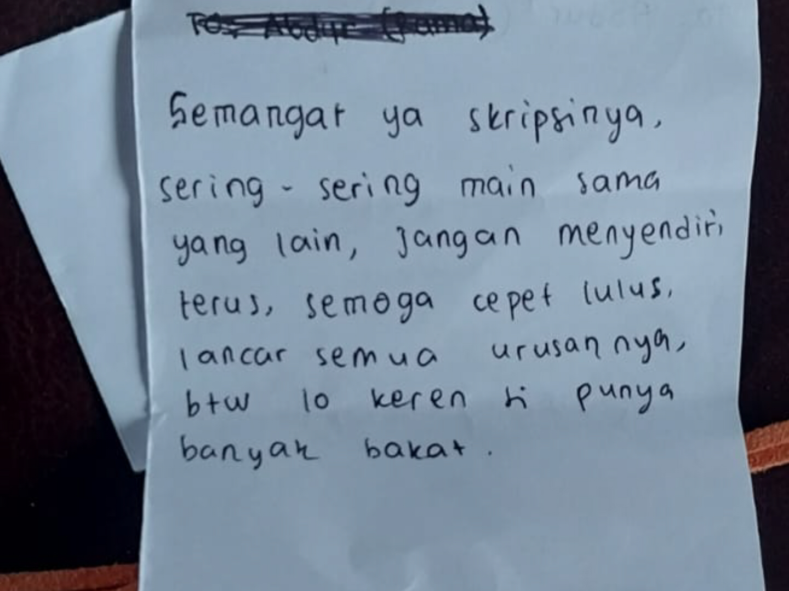

Kamu tahu, Sinta, pas kemarin, yang aku ngambek karena kamu tidak jadi cerita padaku... Yah, itu cuma karena aku penasaran aja sih sama ceritanya. Nggak tau juga, apakah aku ngambek beneran atau cuma pura-pura ngambek aja.
...
Sebab sinta, dirimu dipertemukan dengan rama secara ugal ugalan, lelaki itu tidak menduga apapun dari pertemuan itu, kau tiba tiba bertemu dengannya, tiba tiba menyapanya, tiba tiba datang ke sidangnya, tiba tiba menemaninya jalan jalan, tiba tiba berpisah, tiba tiba bertemu, dan tiba tiba berpisah lagi...
lalu nanti tiba tiba bertemu lagi..
Segala sesuatunya tidak diantisipasi sebelumnya, hatinya yang masih patah, engkau satukan juga secara tiba tiba
Shock dia… Tiba-tiba dia jadi banyak menulis. Surat suratan ala ala ini juga konsekuensi dari semua tiba tiba itu sinta,
Jadi tolong ya.. sinta jangan anggap rama bisa marah, ngambekan, atau badmood denganmu lama-lama.
...
walaupun begitu, Sinta, yang bikin aku lebih penasaran itu—kenapa ya aku bisa ngambek kemarin? Maksudku, aku jarang seperti itu, Kau tahu… Apa itu artinya kita sudah sedekat itu, sampai aku bisa ngambekan padamu ya? Hahaha. Lagian, cuma orang-orang yang dekat saja yang bisa jujur sama perasaannya tanpa perlu jaim-jaiman, kan, Sinta
Tapi, yah... itu lupakan saja. Lagian, aku cuma pura-pura ngambek kok. Aku tidak pernah, dan mungkin tidak akan bisa, ngambekan padamu beneran. Jadi... surat ini bisa kamu terima jadi permintaan maaf ala-ala ku. Ya, anggap saja begitu.
Atau, kamu bisa juga anggap ini sebagai terima kasihku karena kemarin sudah kamu bantu untuk revisian. Tahu tidak, aku suka sekali mendengar suaramu dengan logat khas itu—suaramu dengan nada serius pas ngobrol soal jurnal itu, suaramu dengan nada santai, juga suaramu dengan aksen yang engkau cadel-cadel kan saat mengobrol dengan anak kecil
Benarkan, Sinta... Aku memang tidak sepintar yang kamu kira, juga tidak sekeren yang kamu bayangkan.
Selamat malam, Raah. Barangkali rembulan malam ini masih bercahaya untukmu. Malam ini bulannya terang ya, Raah? Tidak hanya sekadar purnama, ini Flower Moon. Istilah untuk Bulan Purnama yang terjadi pada bulan Mei. Kau tahu, Raah, dinamakan demikian karena hadirnya bertepatan dengan musim mekarnya bunga di belahan bumi utara. Entah apa yang ada di benak mereka saat cahaya bulannya jatuh pada bunga-bunga yang bermekaran itu.
Apakah akan ada Clair de Lune yang memperagakan waltz di situ?
Soal dewasa, Raah, aku tidak tahu apakah sekarang aku sudah menjalani hidup selayaknya orang dewasa atau belum… dewasa tindakanku, dewasa pemikiranku, atau dewasa hatiku. Selama 21 tahun hidupku, mungkin tidak terlalu banyak yang aku mengerti, tidak sebanyak dirimu, Raah. Tapi, akhir-akhir ini, sejak aku niat—dan benar-benar niat—memulai perjalanan untuk lebih mengerti, untuk lebih memaklumi, untuk lebih konsisten, untuk lebih baik, aku temukan mutiara-mutiara yang mungkin sedikit demi sedikit memperbaiki cara pandangku, memperbaiki prasangkaku, memperbaiki sifatku, memperbaiki perkataanku, memperbaiki diriku.
Kau tahu, kesibukanku memang tidak sepertimu, Sinta, yang suka bertemu banyak orang, bercerita, jalan-jalan, mengajar. Kesibukanku, yahh, pada dasarnya hal-hal yang membosankan yang aku lakukan seorang diri, seperti writing code, melukis, menulis, mungkin kadang-kadang aku inisiatif untuk membuat projek yang aku harap punya manfaat walau sedikit.
Saat menuliskan ini, ada yang ingin aku tanyakan padamu... Sinta, sesuatu lewat di pikiranku... Jika bulan dan bintang berpisah, sungguh siapa yang bisa menjamin mereka tidak saling mengamati? Siapa yang bisa menjamin mereka tak saling mengagumi? Siapa yang bisa menjamin mereka tidak saling berharap? Siapa juga yang bisa menjamin mereka tidak saling menunggu... Maka siapa yang bisa menjamin mereka tidak jatuh cinta?
Tentang putri dari bulan yang aku ceritakan padamu kemarin, tentang bunga matahari, tentang paus, dan tentang harapan itu, aku benar-benar suka saat menceritakan itu semua padamu, Sinta.
Oh ya, Sinta,
Saat mengecek kembali tulisanku, ternyata ada sepucuk surat yang baru aku ingat tak sempat aku kirimkan padamu. Aku memang tidak ingin menyembunyikan apapun darimu, jadi yahh... aku kirim barengan dengan tulisan ini saja, ya. Maaf, aku tidak sempat mengirimnya, atau mungkin menunda-nunda untuk mengirimnya dan akhirnya jadi lupa.
Karena kupikir itu akan jadi surat terakhirku. Sebab, awalnya aku memang tidak tahu sampai kapan surat-suratan ala-ala ini akan bertahan... Mungkin ini akan terus ada selama kisah Rama bertemu Sintanya masih terus berjalan.
[27 maret 2025]
Raah, sudah lama aku ingin mengakhiri surat-suratanku ini. Mungkin ini tulisan terakhirku untukmu.
Kali ini kutulis ini sembari berteduh di tengah hujan deras di Puncak. Bapak-bapak penjaga warung yang kuteduhi menyuruhku masuk. Maka aku tersenyum padanya dan masuk ke warung itu.
Hujannya deras, ya?..
Oh ya... Aku sudah lama sekali tidak melihatmu secara langsung. Kamu masih saja seperti dulu, ya? Aku senang melihatnya. Walaupun tak sempat aku menyapamu, barang satu kata... Tak ada maksud mengacuhkanmu atau apa, hanya saja... Aku tak ingin kepikiran lagi. Move on.
Oh ya, tadi pas sesi surat-suratan, aku dapet pesan yang baik. Tidak tahu dari siapa... tapi ya... pesannya baik.
...
...
Sekarang aku tulis ini di atas pesawat dari jakarta dengan tujuan ke suatu tempat yang nyaman. Suatu tempat yang selalu aku bermimpi tentangnya suatu tempat yang punya laut yang jernih suatu tempat yang membuatku selalu menabung rindu sedikit demi sedikit. Dan saat ini celengan itu akan aku pecahkan.
Tapi rahh. Tidak tahu, entah karena apa. Ada rasa yang aneh dalam hatiku saat ini. Entah apa ini namanya, mungkin karena aku meninggalkan sesuatu saat ingin kembali pulang.
Raah menurutmu apakah mungkin pertemuan 6 hari dapat memunculkan rasa yang mengikat dua manusia dengan tali tak kasat mata. Menurutmu... apakah obrolan pendek beberapa kali diselingi candaan dan tertawa bisa menimbulkan keterikatan
Menurutmu.. apakah…apakah awan awan itu bisa diinjak raah, hahaha
selepas awan awan itu…Mulai terlihat daratan dengan rumah-rumah yang berjarak kelihatan proporsi pohonnya lebih banyak dan hijau dibanding jakarta
Berdebar ya... rahh
Terakhir, Sinta, Aku ingat kamu dulu bilang kalau sering ngerasa sendiri, loneliness, di Jogja... Jangan, Sinta. Sebab kamu punya aku. Kamu bisa menceritakan semuanya padaku, memintaku membantumu tentang apapun—aku usahakan semampuku.
Juga sinta, tolong jangan terlalu membuatku khawatir.
Oh iya, kamu juga bilang kalau sekarang kamu sudah punya banyak teman yang baik di lingkungan barumu, di perpustakaan itu. Aku turut senang mendengarnya... Yahh, aku harap kamu tidak melupakanku.
Anyway, good night.
- rama
Previous